原视频：Bilibili · BV1nQXsBuEUz 课程：NJU《操作系统原理》2026 第 8 讲 整理说明：本书由视频语音转录后经 AI 重构而成，口语已转写为书面语；关键时间点均标注 (参考时间)，截图卡片可跳转视频对应位置。
1. 键盘与打字机的遗产
(参考时间: 00:00)
今天的终端看起来现代，接口却仍是「一个字节一个字节」的字符流——这套设计可以从钢琴与打字机讲起。
从乐器到键盘
- 公元前水风琴已有按键；
- 1500 年前后钢琴原型：按键 → 击弦；
- 机械打字机：按键 → 锤子击打色带 → 纸上留字；松键时弹簧蓄力并把字车右移一格。
两键同时按下容易卡死，因此 1860 年代出现了 QWERTY 键盘（通过键位排列降低打字速度以减少卡键的布局）。
键位的机械含义
| 键 | 机械动作 | 延续到今天 |
|---|---|---|
| Shift | 整体抬起字锤一格，改打上档字符 | 大写/符号 |
| Caps Lock | 锁定上档 | 大写锁定 |
| Enter / CR | 字车推回行首 | \r |
| LF | 纸上移一行 | \n |
| Backspace | 光标左移一格 | 退格 |
| Space | 光标右移 | 空格 |
| Tab | 跳到下一个制表位 | 对齐 |
若在 printf 中插入 \r，光标回行首后再打印会覆盖同一行内容——打字机时代用退格 + 斜线「划掉」错字。
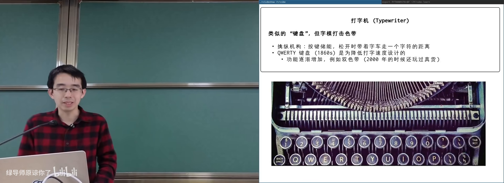
机械打字机与 QWERTY 遗产在 B 站打开 (00:04:10)
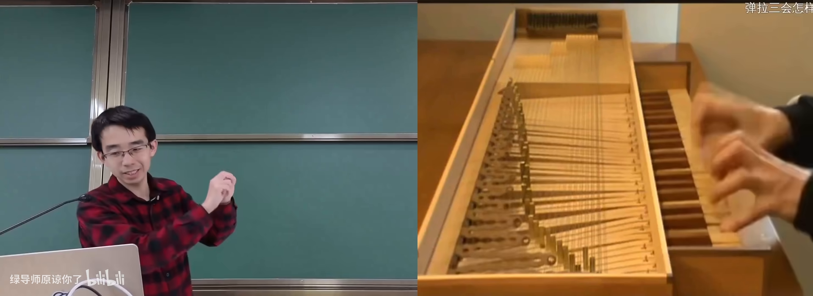
钢琴式击键：锤子、色带与弹簧在 B 站打开 (00:01:30)
2. 电传打字机与 TTY
(参考时间: 00:10)
电传打字机（teletypewriter，按下的字符可在导线另一端被打印出来的设备） 是跨时代产品：不必把纸交给邮差，只要线路和中继站可靠，字符可以跨大陆传输。
每个字符被编成二进制码（早期 5 bit）。计算机时代沿用这一接口：
- 对 OS 而言，终端接受
putchar：写入一个字符，它就打印一个字符； - 写入
\r回行首，\t跳制表位。
TTY 即 teletypewriter 的缩写，今天 Linux 设备名 /dev/tty* 源于此。
ASCII 与控制字符
ASCII（美国信息交换标准代码，用数字对应字符的编码表） 不只含字母数字，前面还有大量控制字符——它们就是给电传打字机用的：
- Ctrl+C → 编码值 3；
- Ctrl+D → 编码值 4（传统「传输结束」）；
- ESC → 0x1B；
- 回车 →
\r（0x0D），不是\n。
键盘上的 Shift 本身不产生送往计算机的数据，它只是终端本地的换挡状态；真正按 A 时才送出大写 A。
VT100 与转义序列
1978 年 DEC VT100 成为事实标准：支持完整的 转义序列（escape sequence，以 ESC 开头的字符组合，用来控制颜色、光标、滚动等），80×24 字符布局沿用至今。
ASCII 没有「上下左右」方向键编码，因此方向键会被编码成 ESC + 若干字符（如 ESC [ A）。终端模拟器（terminal emulator）软件模拟了 VT100 行为。
Unicode 加入后，终端还能用框线、色块字符拼出复杂 UI 甚至图像。
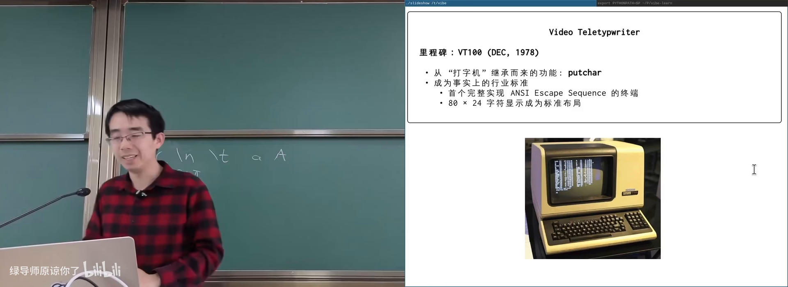
VT100 与 escape sequence在 B 站打开 (00:17:20)
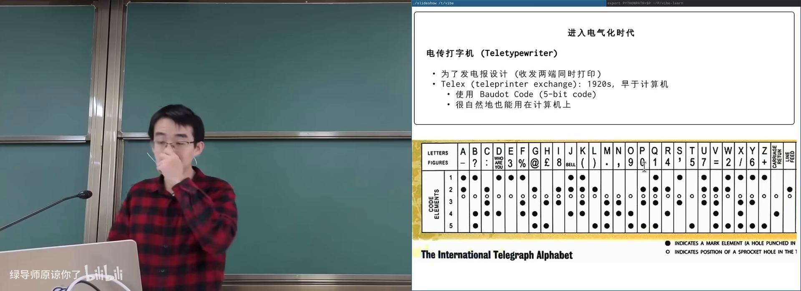
电传打字机：字符编码表在 B 站打开 (00:11:50)
3. 终端作为输入设备：原始字节
(参考时间: 00:21)
终端既是输出设备（接收字符并打印），也是输入设备：按键被编码成字节送入操作系统，是否回显、如何解释，由操作系统与应用程序共同决定。
主讲人准备了一个「原始模式」demo：终端收到的所有按键原样打印。
观察到：
- 普通字母：ASCII 码正常；
- Shift：不产生字节；
- Ctrl+C：得到单个字节
0x03，程序并没有立刻被杀（因为关闭了默认解释）； - Ctrl+D：
0x04； - 方向键：一串 ESC 序列。
若程序配置成「所有字符直通」，Ctrl+C / Ctrl+Z 都无效，只能另开终端 kill。
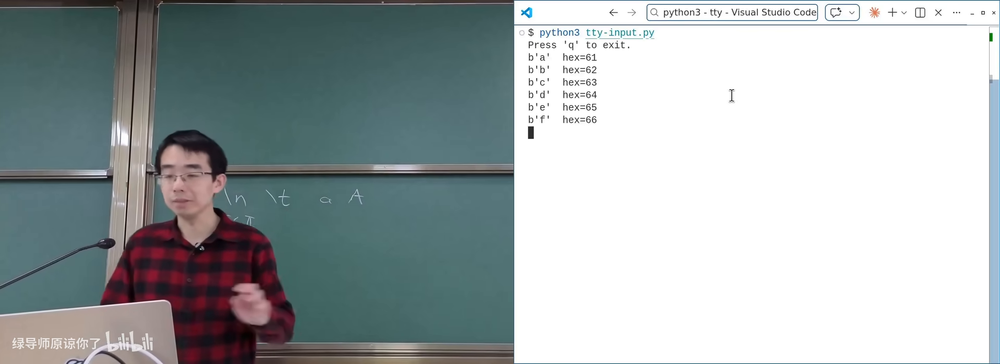
原始读取终端字节流在 B 站打开 (00:24:00)
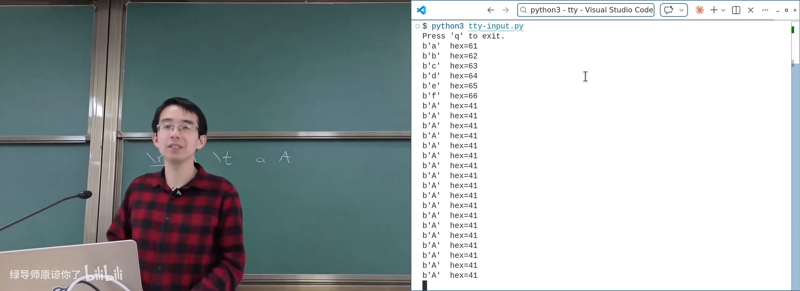
Shift 不产生字节；Ctrl+C = 0x03在 B 站打开 (00:24:20)
4. 伪终端与终端中的终端
(参考时间: 00:28)
现代操作系统可以无限分配伪终端（pseudo-terminal，模拟 VT100 行为的虚拟设备对）：/dev/pts/N。要多少有多少，用完销毁，名字可复用。
创建方式（一切皆文件）：
open("/dev/ptmx")请求新的 master 端；grantpt/unlockpt完成权限与从端准备；- 得到 master 文件描述符与从端路径（如
/dev/pts/4）； - 在从端上运行程序；master 侧可读写转发。
tmux / 终端分屏器 的原理就是：在当前终端里再开伪终端，把输入输出在多个 PTY 之间转发。主讲人现场 web coding 的 mini-tty 在 /dev/pts/3 里创建 /dev/pts/4，实现「终端中的终端」。
ttyrec
利用 PTY 可以录制会话：劫持字符流并带时间戳保存，ttyreplay 可完整回放，甚至渲染成网页里的 SVG 动画。教学演示与 AI 配讲解脚本都建立在这一机制上。
flowchart LR
K[键盘/模拟器] --> T[PTY 从端 pts/4]
T <-->|字节流| M[PTY 主端 ptmx]
M --> P[用户程序 mini-tty]
P --> O[显示到外层终端 pts/3]
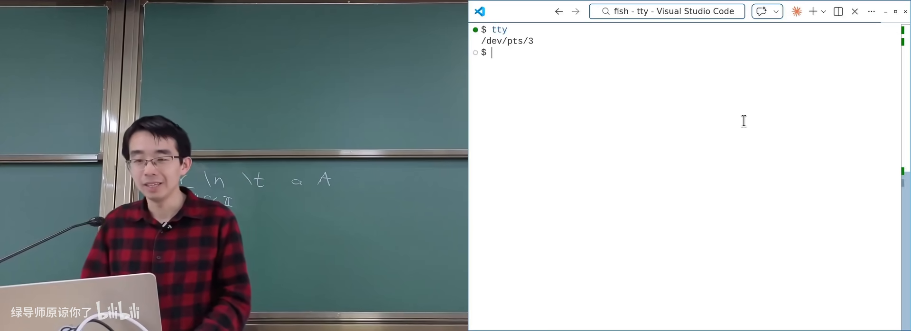
mini-tty：请求新的伪终端在 B 站打开 (00:29:40)
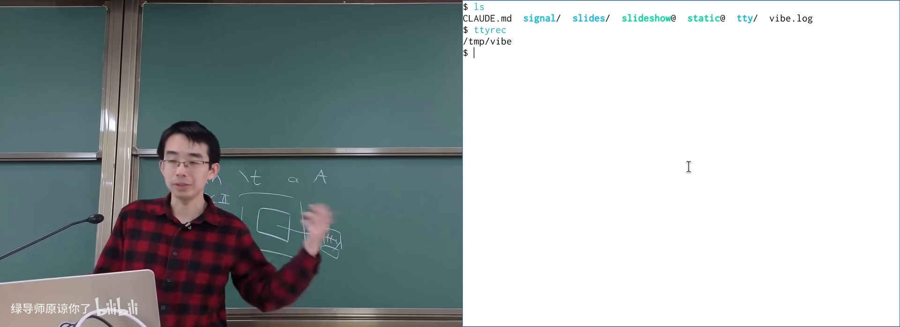
ttyrec：录制并回放终端会话在 B 站打开 (00:32:50)
5. 规范模式与 Ctrl+C
(参考时间: 00:42)
系统启动时如何准备终端
- 固件 → 操作系统初始化；
- 扫描并初始化终端设备；
init启动 getty（打开终端、提示登录并启动 login 的程序）；login打开对应 TTY，把文件描述符 0/1/2 指向它，建立 session；- 远程 SSH 则由
sshd分配 PTY 再启动 shell。
早期还有波特率（baud rate）等串口参数；现代模拟终端常假显示为 38400。
行编辑：Canonical mode
cat 在等待输入时：你敲 AAAA 可退格修改，但 read 尚未返回；按回车后才一次性读到一行。
这是因为默认 规范模式（canonical mode，操作系统终端驱动提供行缓冲与行编辑的模式）：
- 字符先进入驱动内部 buffer；
- 支持退格等行编辑；
- 可关闭回显（输入密码时）；
- 回车后才把整行交给进程。
用 stty -a 可以看到当前配置，例如：
intr = ^C：中断键；quit = ^\：退出键；eof = ^D：文件结束。
信号
信号（操作系统异步通知进程「发生了某事」的机制） 可以在程序任意执行点强制跳转到处理函数。
- 未自定义处理时：Ctrl+C 触发默认行为 → 终止；
signal(SIGINT, handler)可打印消息、选择忽略或自行退出；kill -INT <pid>与终端 Ctrl+C 效果相同（同一信号）。
Ctrl+C 在规范模式下才被驱动解释成中断；原始模式下它只是字节 0x03。
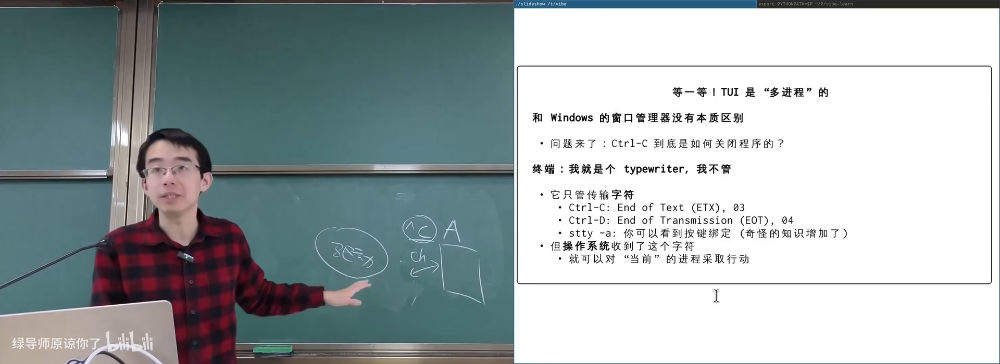
stty -a 与 canonical mode在 B 站打开 (00:52:50)
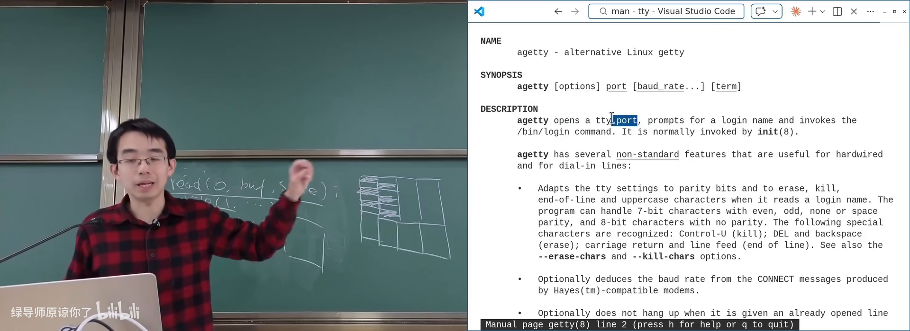
getty / login：把人绑到终端上在 B 站打开 (00:43:30)
6. Session、进程组与 Job Control
(参考时间: 00:57)
问题：Ctrl+C 时，进程树里哪些进程该被杀？父进程死了子进程可能被 init 收养，按父子关系杀并不准确。
UNIX 引入两级分组：
- Session（会话，一次登录关联的进程集合，拥有 controlling terminal）；
- Process group（进程组，shell 启动一个命令时分配的前台/后台分组）。
行为：
- Ctrl+C：向前台进程组内所有进程发送
SIGINT； - 后台进程组不会收到，可继续跑；
- Session leader 退出（如 SSH 断开）→ 组内进程收到
SIGHUP默认退出； - 长任务可用
nohup忽略挂断，或挂在tmux里（session 不随 SSH 结束）。
Job Control
Shell 提供类似窗口管理器的能力：
| Shell 操作 | 类比 Windows |
|---|---|
| Ctrl+Z（SIGTSTP） | 最小化 |
jobs |
Alt+Tab 窗口列表 |
fg %1 |
切换到某窗口 |
bg |
后台继续运行 |
| Ctrl+C | 关闭前台程序 |
背后是 setpgid、tcsetpgrp 等系统调用，用来标记前台/后台进程组。
这一套成为 POSIX 标准，兼容性很强，但也是历史包袱：现代容器/沙箱（按用户隔离、namespace/cgroup）本可以用更干净的模型。Android 甚至按「每个 App 一个用户」做权限隔离，强停时直接杀该 UID 下全部进程。
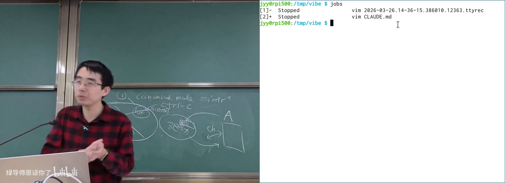
Job Control：进程组与前台/后台在 B 站打开 (01:09:00)
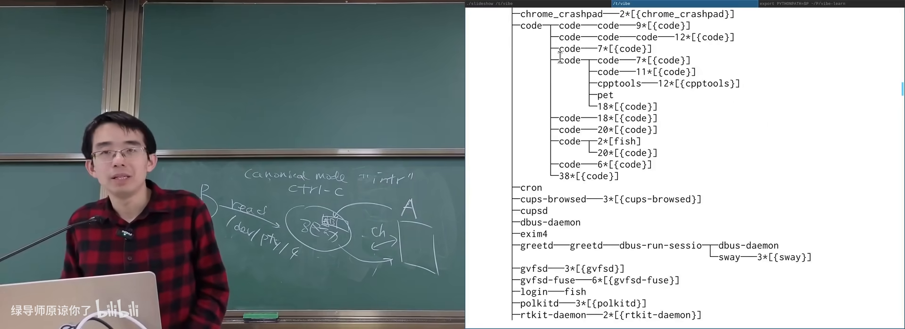
Ctrl+C 发给谁：前台进程组在 B 站打开 (00:57:00)
附录：概念补给
TTY / 电传打字机
- 是什么：通过线路收发字符的打字设备；今为终端子系统代称。
- 课上为何出现：解释
/dev/tty、终端接口的由来。 - 和什么像：传真机与打字机的结合体。
转义序列（Escape Sequence）
- 是什么：以 ESC 开头、控制终端显示/光标等行为的字节串。
- 课上为何出现：ASCII 无法表达颜色、方向键等功能。
- 和什么像：文档里的「打印机控制码」。
规范模式（Canonical Mode）
- 是什么：终端驱动做行缓冲与行编辑，回车后才把一行交给进程。
- 课上为何出现：解释
cat为何 read 不立刻返回。 - 常见误解：回显和行编辑是 OS 驱动做的，不是
cat自己实现的。
伪终端（PTY）
- 是什么：由 master/slave 组成的虚拟终端设备对。
- 课上为何出现：tmux、SSH、终端录制的基础。
- 和什么像：电话总机：你这头说话，另一头假扮成一台打字机。
信号（Signal）
- 是什么：OS 异步通知进程的机制，可触发自定义处理函数。
- 课上为何出现：Ctrl+C、Ctrl+Z、SIGHUP 的底层语言。
- 和什么像：门铃——可选择去开门、忽略或按你的规矩处理。
SIGINT / SIGTSTP / SIGHUP
- 是什么：中断（Ctrl+C）、停止（Ctrl+Z）、挂断（终端断开）信号。
- 课上为何出现：前台作业与 SSH 断开时进程命运不同。
- 常见误解：Ctrl+C 不是「硬件直接杀进程」，而是信号约定。
Session / 控制终端
- 是什么：一次登录对应的进程集合及其绑定的终端。
- 课上为何出现：决定 SIGHUP 发给谁；job control 的边界。
- 和什么像：一次值班班次：人走灯灭（leader 退出则通知全体）。
进程组 / 前后台
- 是什么：shell 为每个命令分配的进程分组，区分前台与后台。
- 课上为何出现：Ctrl+C 只作用于前台组。
- 和什么像：前台窗口 vs 最小化到后台的应用。
Job Control
- 是什么：shell 中挂起、切换、后台继续运行作业的机制。
- 课上为何出现：命令行里的「窗口管理器」。
- 常见误解：后台进程默认可能是「停止」状态，需
bg继续。
QWERTY
- 是什么：为降低打字机卡键而设计的键盘布局。
- 课上为何出现：现代键盘布局的历史成因。
- 常见误解：并非单纯为「提高速度」而设计。
getty / login
- 是什么：打开终端、提示并完成登录的程序。
- 课上为何出现：系统如何把「人」与进程、TTY 绑定起来。
- 和什么像：前台接待：先验身份，再带你进入工位。
Unicode 与终端图形
- 是什么：统一字符集，终端可用大量符号拼 UI/图像。
- 课上为何出现：从 80×24 文本到现代 TUI/图片显示。
- 和什么像：用有限积木块拼出复杂浮雕。
书架 Shelf 流水线生成 · 内容衍生自 B 站公开课程视频 BV1nQXsBuEUz